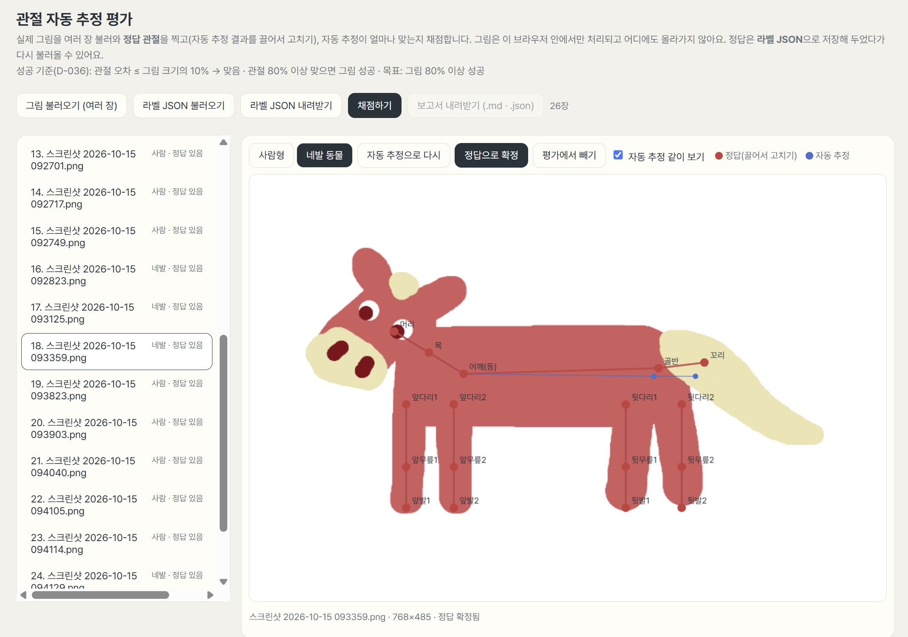
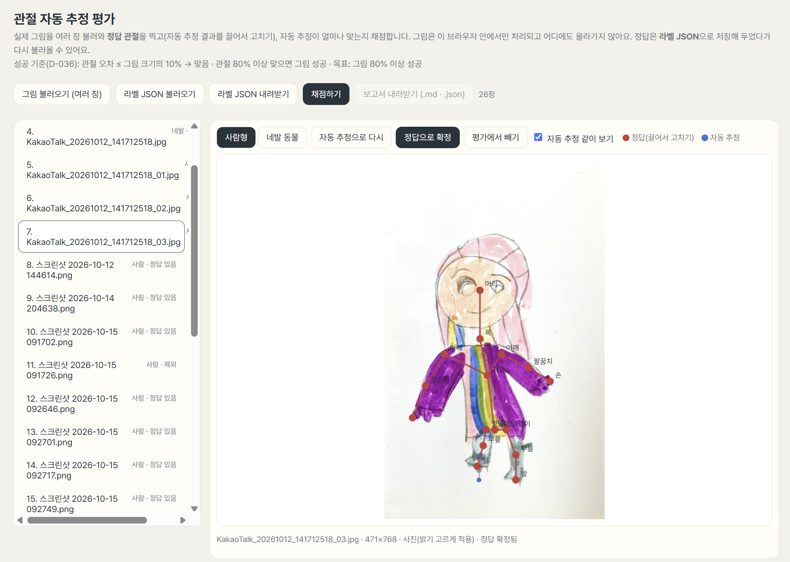
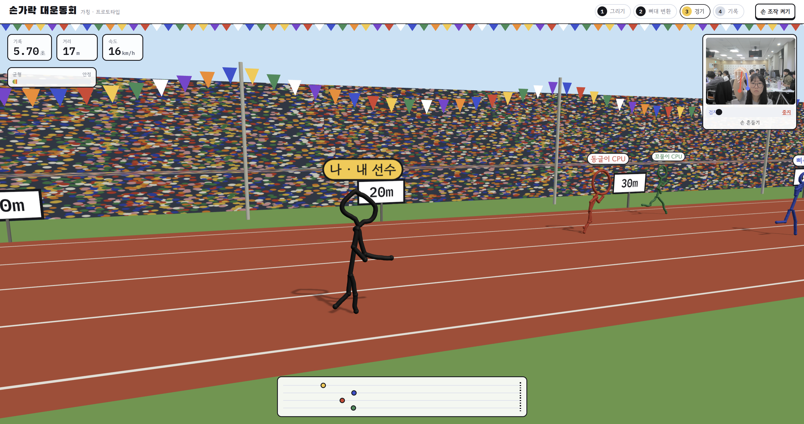
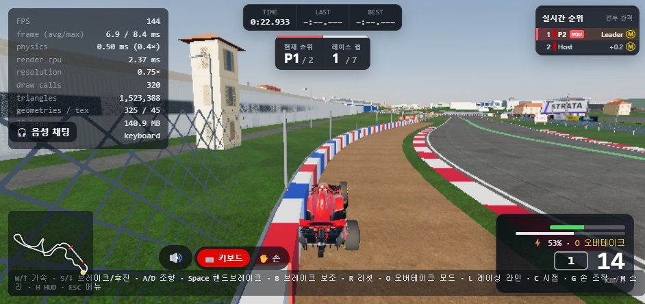

Draw2World AI
팀 워커홀릭 · SSAFY 자율 프로젝트 · 2026.10
문제
아이디어
만들기
구현 완료움직이기
구현 완료놀기
프로토타입아키텍처
①
그림 입력구현 완료②
캐릭터 분할구현 완료③
2D → 3D④
관절 · 스키닝구현 완료⑤
동작 인식 → 게임프로토타입기술 ① 2D → 3D
기술 ② 관절 · 리깅


기술 ③ 동작 인식

데모

로드맵
지금
개별 데모1
설계 · OSS 선정향후 계획2
통합 MVP향후 계획3
온라인 대전실험 중4
플랫폼 확장향후 계획내가 그린 캐릭터가 3D로 살아 움직이고,
내 몸짓을 따라 게임 속에서 활동한다.
?
상세 기능명세서 [확인 필요]